CÁLCULO AL MES
TU TOTAL DE AGUA MENSUAL UTILIZADA ES DE:
GRÁFICA PASTEL POR TIPO DE CONSUMO
HUELLA HÍDRICA TOTAL AL AÑO
TU CONSUMO DE AGUA ANUAL ES DE:
CONSUMO DE PISCINAS RESIDENCIALES AL AÑO
TU CONSUMO DE AGUA COMPARADO A LA CANTIDAD DE PISCINAS RESIDENCIALES AL AÑO ES DE:
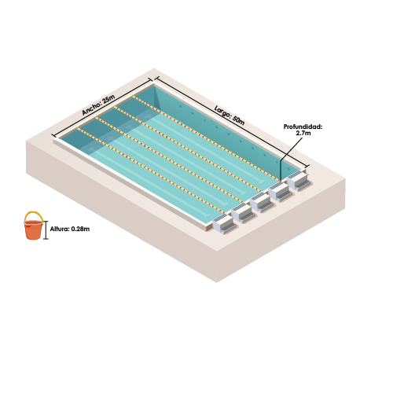
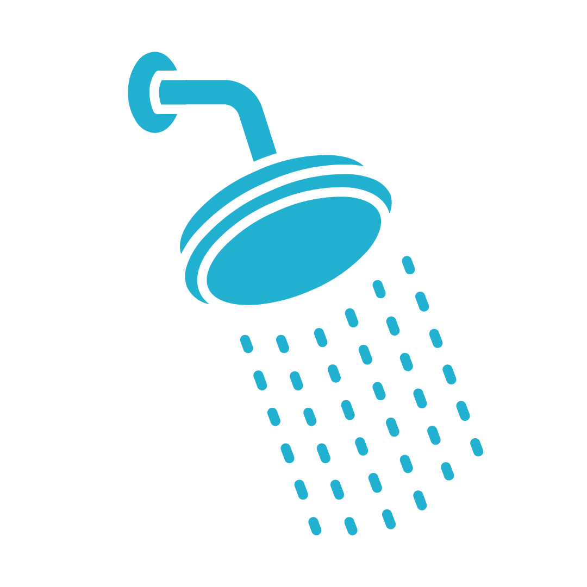
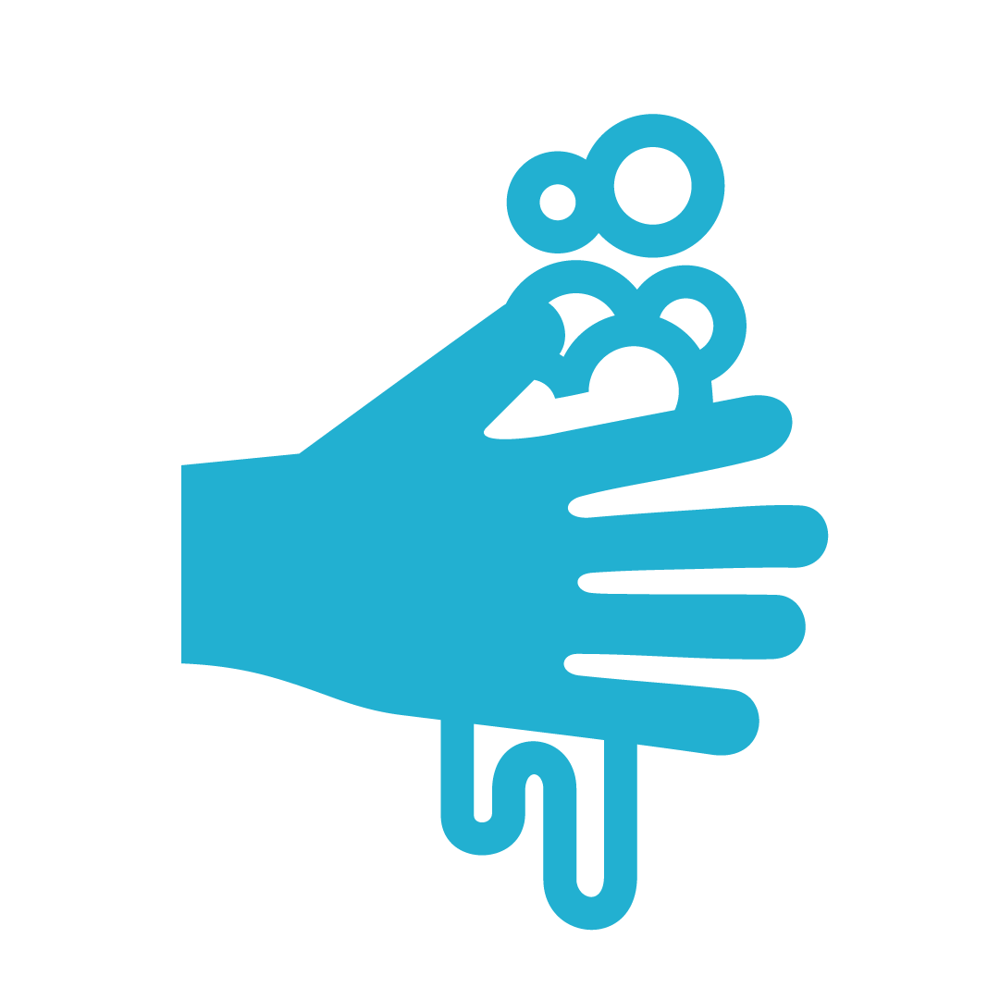
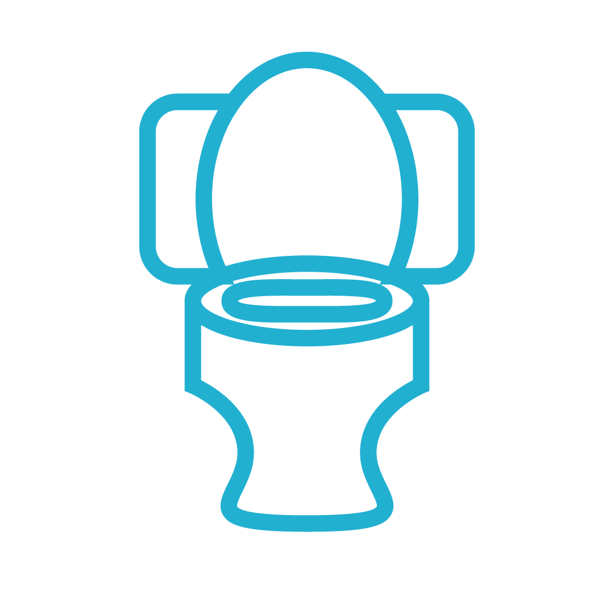
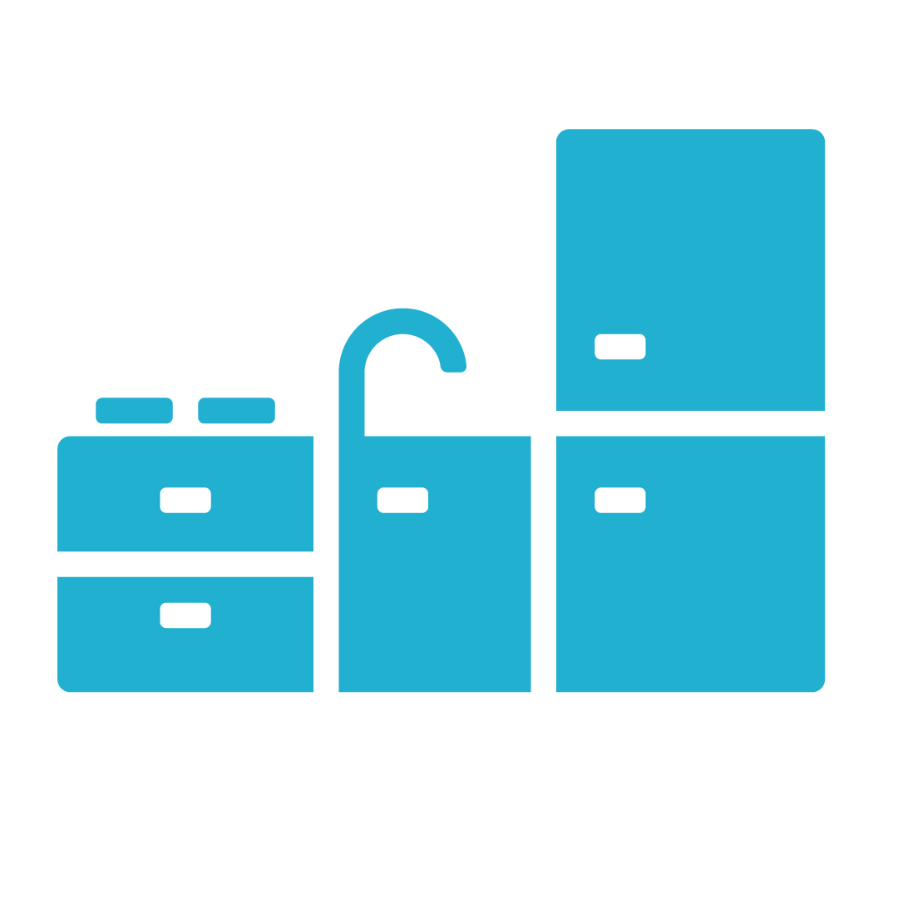
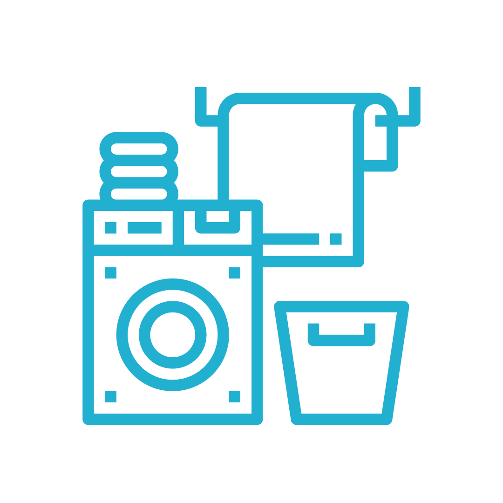
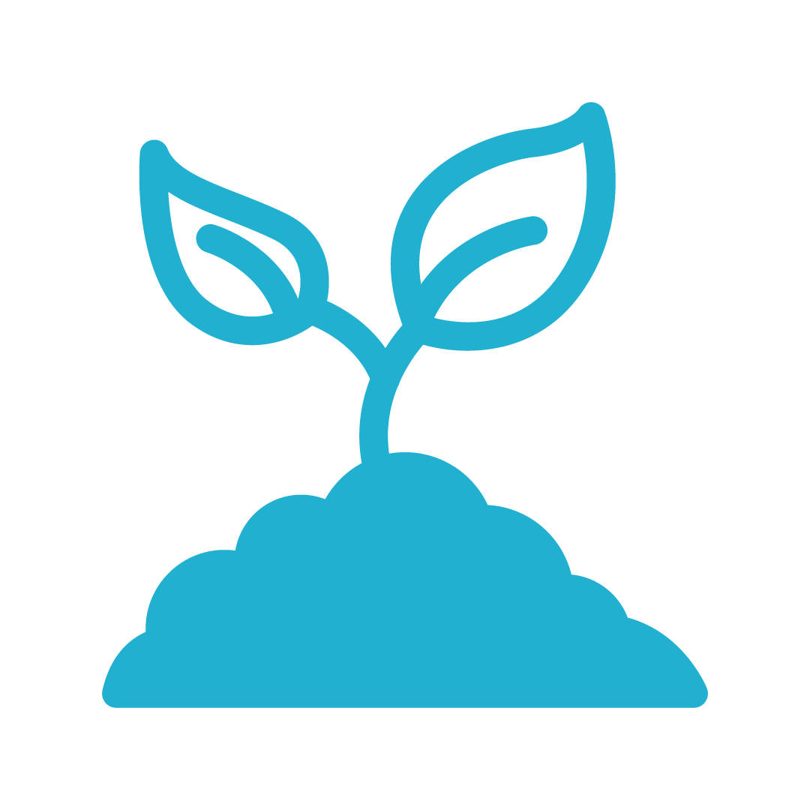
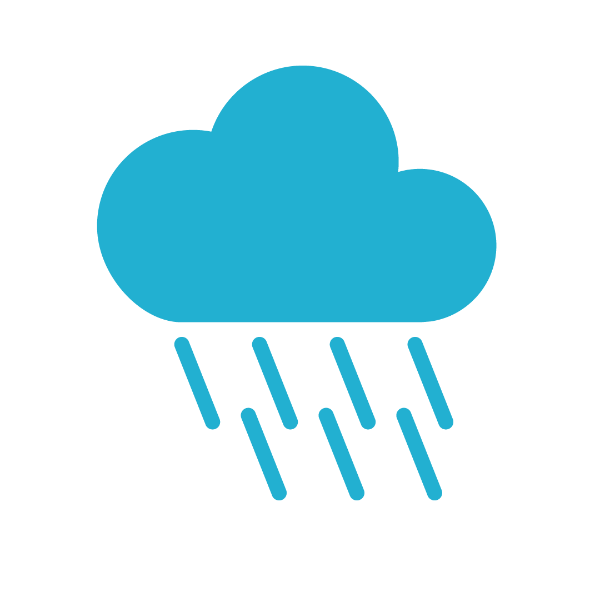
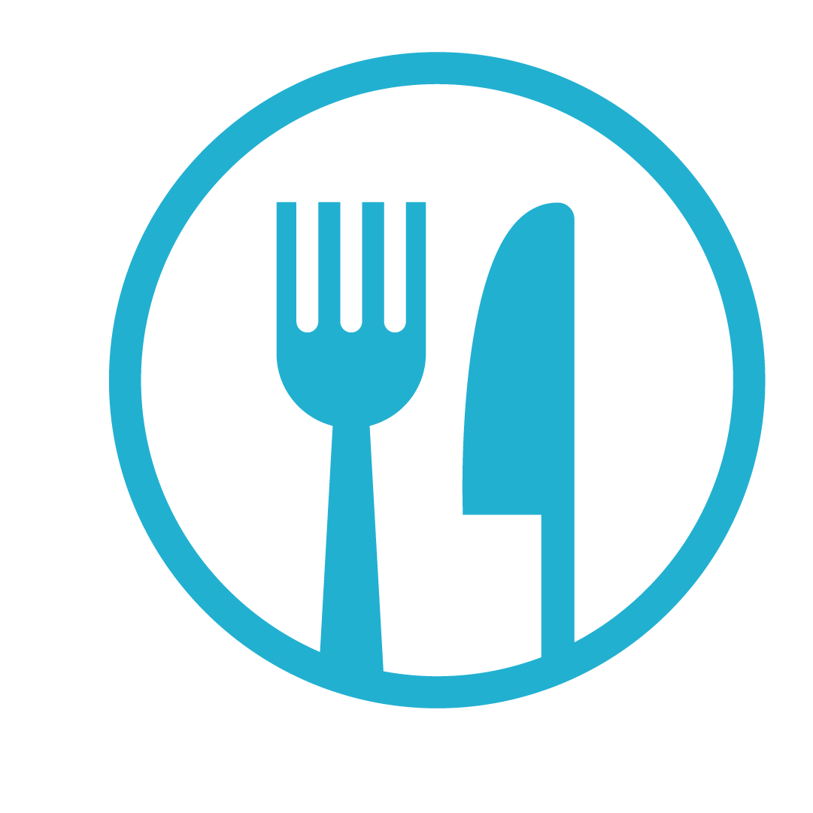
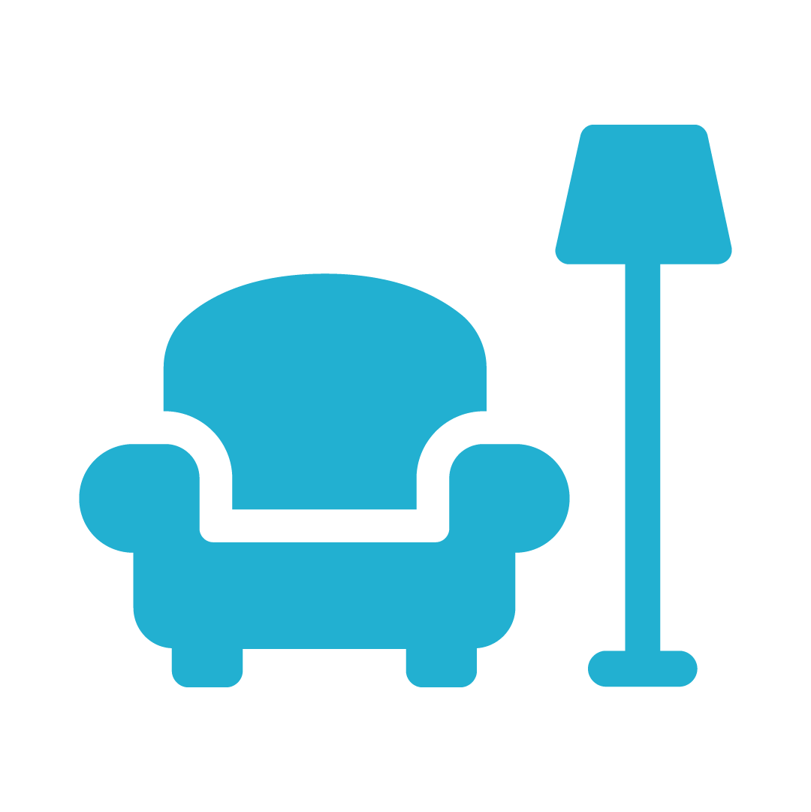
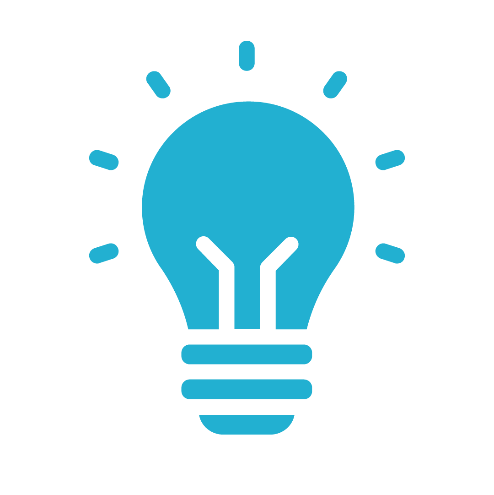
Si deseas seguir investigando y conocer huellas hídricas de Bolivia según sus actividades económicas, o de otros países del mundo, de productos alimenticios globales, cuencas hidrográficas del mundo, y compararlo con tus resultados personales, de cuenca o nacionales, entra a los siguientes enlaces de la Water Footprint Network (Red la Huella Hídrica), de los creadores de la huella hídrica:
Herramienta de evaluación de la huella hídrica de la WFN
www.waterfootprintassessmenttool.org
Calculadora personal de huella hídrica de la WFN
www.waterfootprint.org/resources/ interactive-tools/personal-water-footprint-calculator
Calculadora de huella hídrica extendida de la WFN
www.waterfootprint.org/resources/ interactive-tools/extended-water-footprint-calculator